El manual de KAWA BETA
KAWA convierte el M-VAVE FM-1 en un tracker de bolsillo, para componer en cualquier estilo. Tienes seis pistas, cada una con su motor: pulso, onda, ruido, FM, kit de batería o sample. A eso se suman patrones que encadenas en una canción, 32 efectos para tocar en directo y herramientas que escriben ritmos por ti.
Este manual va al grano: instalar KAWA, luego cinco tutoriales para hacer una canción de verdad, y después el detalle del sonido y de los efectos. Versión 0.4 beta.
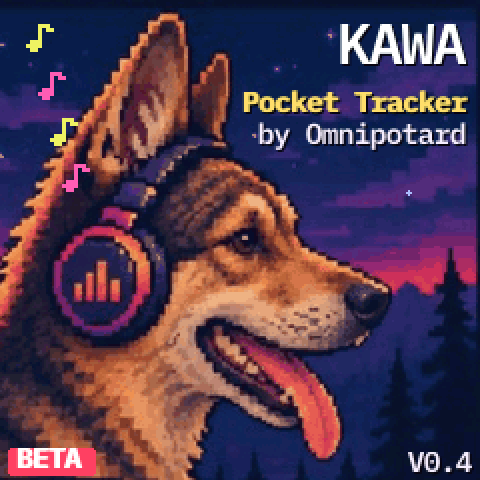
Versión beta: léelo antes que nada
KAWA 0.4 compila para el FM-1 y pasa todas las comprobaciones de su plataforma: tamaño, memoria, acceso al hardware. Funciona en el simulador y en el emulador web. En cambio, todavía no se ha probado en un FM-1 real.
Instalar un firmware no oficial es bajo tu responsabilidad. El camino de instalación es el de Dinghy y Felucca, que ya se usan en FM-1 reales, y tiene varias redes de seguridad (más abajo). Conecta el FM-1 a una alimentación estable y no lo desconectes nunca durante una instalación.
Los proyectos todavía no se pueden pasar al ordenador. Si algo te parece raro, dilo: para eso sirve una beta.
Componer con un tracker
KAWA no está hecho para un solo estilo. Pop, techno, hip hop, ambient, jazz, rock, música de videojuegos, chiptune, breakcore: todo se escribe en un tracker. Lo que cambia es la forma de componer, muy distinta de un programa de música habitual (un DAW).
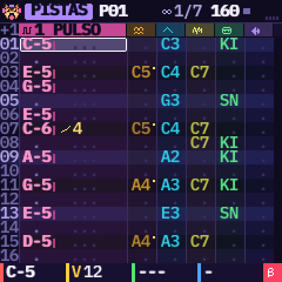
El tiempo baja: cada fila es un paso, una semicorchea (cuatro filas por tiempo). Cada columna es una pista. Cada celda dice qué tocar en ese paso exacto: una nota, su volumen y un efecto.
Lees la canción como una partitura que se desplaza, y la escribes con el teclado, nota a nota, en el sitio exacto. Sin ratón, sin zoom: la rejilla es siempre la misma.
| En un DAW | En KAWA | |
|---|---|---|
| El tiempo | Avanza de izquierda a derecha, en una línea de tiempo | Baja fila a fila; una fila es un paso |
| Escribir una nota | Dibujarla en un piano roll | Tocarla en el teclado en la fila que quieras (REC) |
| Matices y efectos | Curvas de automatización | Escritos en la celda, al paso: arpegio, glissando, redoble, volumen… |
| La canción | Clips colocados en una línea de tiempo | Patrones cortos encadenados en la CANCION, cada uno tocado N veces |
| Los sonidos | Pistas de audio y plugins | Seis pistas, cada una con su motor (FM, kit, sample…), todo dentro de la máquina |
Lo que ganas: toda la canción se lee de un vistazo, al paso; las manos se quedan en las teclas y los potenciómetros; escribes un patrón rápido, lo varías (CLONAR, MAGIA) y lo encadenas. Los tutoriales de abajo recorren todo el camino, de una canción vacía a una terminada.
01Instalar KAWA
Necesitas un cable USB de datos, un ordenador y Python 3 (python.org). El firmware es el archivo kawa-0.4.fwsc de la carpeta install/.
- Cierra los demás programas MIDI y luego conecta el FM-1 encendido.
- Lo más fácil: doble clic en
INSTALL-Windows.batoINSTALL-Mac.command(Linux:./INSTALL-Linux.sh). La primera vez descarga lo que necesita (rtmidi2); comprueba el paquete, pide confirmación, envía el loader y después la aplicación. - A mano:
pip3 install rtmidi2, luegopython3 install/fm1_install.py --infopara ver qué ejecuta el FM-1, y despuéspython3 install/fm1_install.py install/kawa-0.4.fwsc. - El FM-1 se reinicia en KAWA: aparece el perro y luego la demo.
Lo que la instalación nunca escribe
- El principio de la memoria, con el bootloader del chip y su configuración.
- La zona de los proyectos y los samples, de 0x97000 a 0xE0000, y los ajustes, en 0xFC000.
- Una actualización conserva tus proyectos y tus samples. Los proyectos de la 0.2 se abren en la 0.4 tal como eran (se convierten al cargarlos y se guardan en el formato nuevo). Los proyectos hechos con la 0.1 no se leen (su formato cambió); arranca la demo en su lugar, y se reemplazan en cuanto guardas.
Las redes de seguridad
- Nada se da por bueno antes del final. Si el envío falla, la zona de tránsito se borra y el firmware anterior sigue funcionando.
- El paquete se comprueba entero antes de borrar nada. Un paquete dañado o incompleto se rechaza. Un sector que llega distinto durante la escritura se vuelve a leer, nunca se escribe.
- Un corte de corriente durante la instalación: el loader sigue donde estaba al volver a encender. Vuelve a lanzar el instalador.
- El rescate USB: mantén OCT− al encender. KAWA arranca entonces sin sonido, solo con la actualización. Si KAWA se cuelga dos veces seguidas en los 30 segundos siguientes al encendido, el FM-1 entra en este modo por sí solo.
- Como último recurso: la ROM de arranque del chip todavía responde por USB (
WL80UBOOT). FM-1 Transporter puede entonces reescribir el firmware oficial, pero hace falta hardware adicional, y según la ingeniería inversa del FM-1 este camino todavía no está probado en los FM-1 de serie.
02Volver al firmware oficial
Si KAWA no te convence, el firmware oficial se reinstala con la herramienta de M-VAVE. Es el paso más delicado, porque también reescribe el bootloader: tómate tu tiempo.
- Los proyectos de KAWA se perderán. El firmware oficial no sabe leerlos.
- Conecta el FM-1 a una alimentación estable, con un cable USB de datos, y cierra los demás programas MIDI.
- Si KAWA se comporta mal, mantén OCT− al encender: la pantalla muestra «KAWA USB RESCUE».
- Abre M-UPGRADE de M-VAVE con el firmware oficial V15 (identidad
FM-1_015, SHA-256db1642b2…7edb8a). - Antes de que la herramienta oficial escriba nada, KAWA comprueba dos cosas: que es de verdad el programa de actualización de M-VAVE, y que la zona de arranque del paquete oficial es exactamente la que ya está en tu FM-1 (la herramienta oficial la reescribe, así que solo puede volver a poner los mismos bytes). Si una de las dos no cuadra, no se escribe nada y KAWA sigue funcionando.
- No desconectes nada durante la transferencia. Si se detiene a mitad, vuelve a conectar y lánzala de nuevo.
- Comprueba el resultado:
python3 install/fm1_install.py --infodebe responderFM-1_015.
03Recorrido por el FM-1
Un potenciómetro, un color
KNOB 1 es rojo, KNOB 2 amarillo, KNOB 3 verde y KNOB 4 azul, en todas las páginas. La línea de abajo de la pantalla tiene cuatro casillas con los mismos colores y dice qué hace cada potenciómetro. En las páginas de sonido, las tarjetas también llevan esos colores. La pequeña casilla roja marcada β recuerda que es una beta.
Los botones y sus páginas
| Botón | Página | Pulsa otra vez |
|---|---|---|
| HOME | PISTAS: el tracker | Mantenido: la ayuda de la página en la que estás |
| SEQ | REJILLA: los 16 pasos en las teclas blancas | Vuelta a las pistas |
| EDIT | SONIDO: el motor y el sonido de la pista | Página de sonido siguiente |
| ENV | ENVOLVENTE: la ADSR de la pista | MEZCLA: volúmenes, paneos, envíos, efecto del máster |
| LFO | MAGIA: 16 herramientas en las teclas blancas | Vuelta a las pistas |
| SCL | ESCALA: tónica, escala, fijar | Vuelta a las pistas |
| GLO | CANCION: tempo, swing, la lista de patrones | GROOVE: los ticks de cada fila; luego OPCIONES: tema, idioma, reloj MIDI |
| SAVE | PROYECTOS: el menú de las canciones | Mantenido: deshacer / rehacer |
| FX | EFECTOS: mantenido, los efectos en directo | Una pulsación corta deja la página abierta |
| ARP | Borra la celda | Mantenido + SELECT: inserta o quita una fila |
| PLAY REC | Reproducción, grabación | REC mantenido + SELECT: el salto de filas |
En casi todas las páginas, SELECT elige la fila, ALGORITHM la pista y PRESETS el patrón (en las páginas de sonido, el sonido). MASTER ajusta el volumen, y OCT− y OCT+ la octava del teclado.
04Primeros pasos
- Las pistas
Al arrancar, se carga la demo «KAWA QUEST». Cada columna es una pista, con su color. La pista del cursor se muestra ancha: la nota, su volumen en una barrita y el efecto de la celda. Los números de la izquierda son las filas; cada fila dura una semicorchea.
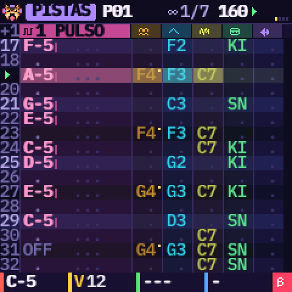
ReproducirPulsa PLAY. La fila que suena se ilumina y las celdas parpadean cuando sale una nota. Arriba a la derecha ves la posición en la cadena, el tempo y el pulso actual. PLAY otra vez lo para.
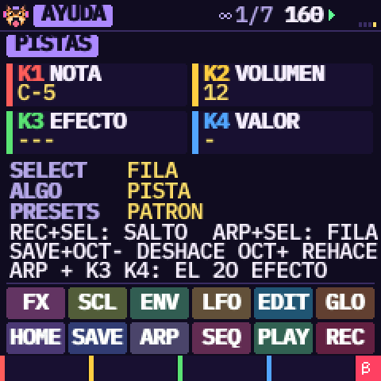
La ayuda, en todas partesMantén HOME en cualquier página. KAWA te muestra entonces qué hacen los cuatro potenciómetros de esa página, los tres encoders y las combinaciones útiles. Suelta HOME para volver a donde estabas.
05Tuto 1 · Una canción nueva
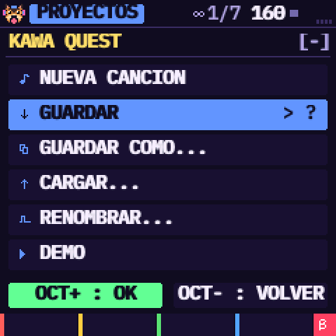
Abre el menú de proyectosPulsa una vez SAVE. Arriba ves el nombre de la canción, su ranura entre corchetes y una estrella si ha cambiado desde el último guardado. SELECT se mueve por el menú, OCT+ confirma, OCT− vuelve atrás.
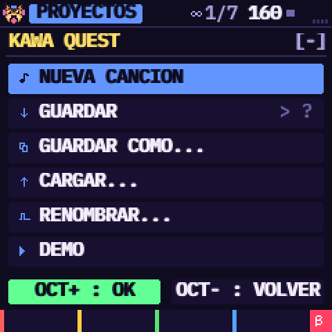
Canción nuevaSube hasta NUEVA CANCION y pulsa OCT+. Si la canción actual no está guardada, KAWA te lo pregunta antes.
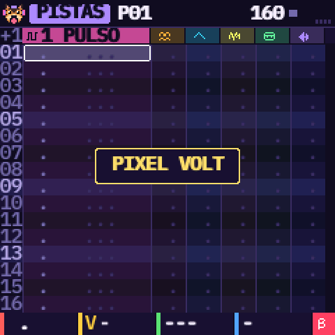
Una canción a estrenarLa canción recibe un nombre al azar, que cambiarás al guardarla. Sus seis pistas ya tienen un sonido cada una: un lead de pulso, la FM, un bajo de onda, unos charles de ruido, un kit y un break.
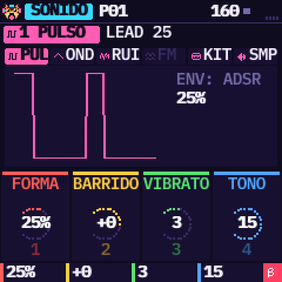
Elige el sonido de una pistaALGORITHM elige la pista y luego EDIT abre su página SONIDO. La franja de arriba muestra los seis motores. PRESETS recorre los sonidos de fábrica, y los cuatro potenciómetros ajustan el sonido.
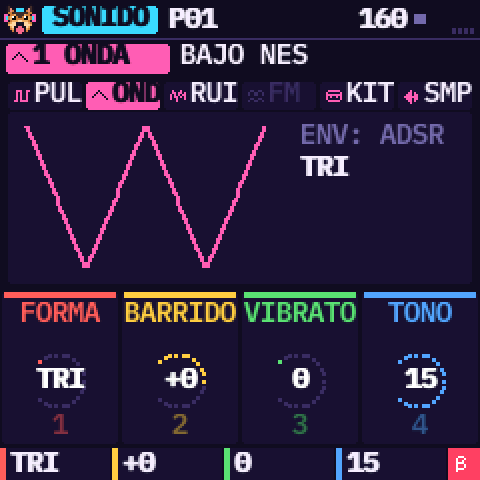
Cambia de motorEn esta primera página, SELECT cambia el motor de la pista: PULSO, ONDA, RUIDO, FM, KIT o SAMPLE. La FM aparece en gris si otra pista ya la tiene: una sola pista FM a la vez, para que el FM-1 nunca se quede sin aliento.
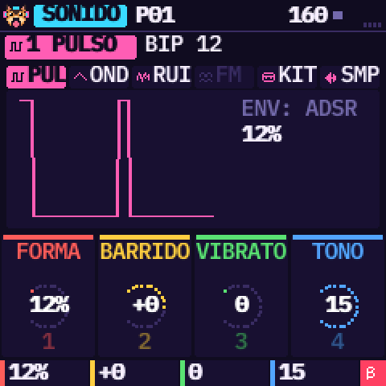
Un sonido de fábricaGira PRESETS para probar los sonidos de fábrica. Una estrella después del nombre quiere decir que lo has modificado. Toca las teclas para escucharlo.
06Tuto 2 · Escribir un patrón
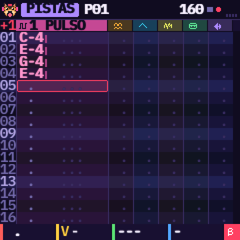
Graba notasVuelve a las pistas con HOME, pulsa REC (el cursor se pone rojo) y toca notas. Cada nota se escribe en la fila del cursor, y el cursor baja. Cuando la escala está fijada (página ESCALA), las teclas se quedan dentro de la escala.
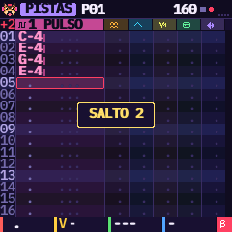
El salto de filasMantén REC y gira SELECT: ajustas cuántas filas salta el cursor después de cada nota (de 0 a 16). Con 2 escribes corcheas; con 4, negras. El valor aparece arriba a la izquierda del tracker.
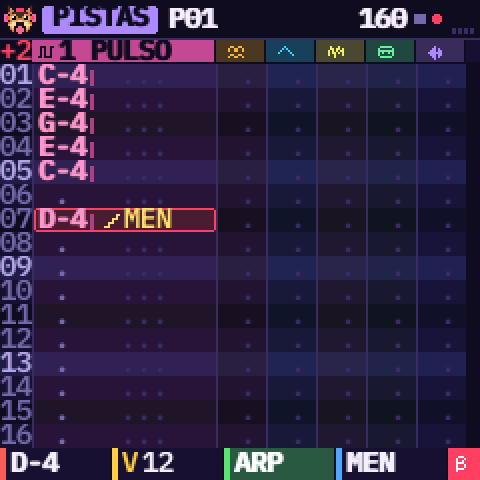
Retoca una celdaColoca el cursor con SELECT. K1 cambia la nota, K2 su volumen, K3 el efecto de la celda y K4 el valor del efecto (aquí un arpegio menor). ARP borra la celda. Mantén ARP y gira SELECT para insertar o quitar una fila.
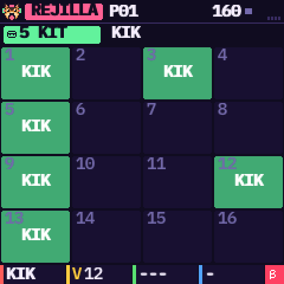
La batería en la rejillaElige la pista del kit con ALGORITHM y pulsa SEQ. Las 16 teclas blancas son los 16 pasos, como en un Pocket Operator: una pulsación pone el sonido, otra lo quita. K1 elige la percusión que vas a poner. Mantén un paso para retocarlo con los potenciómetros. Las teclas negras cambian de pista.
07Tuto 3 · Más patrones
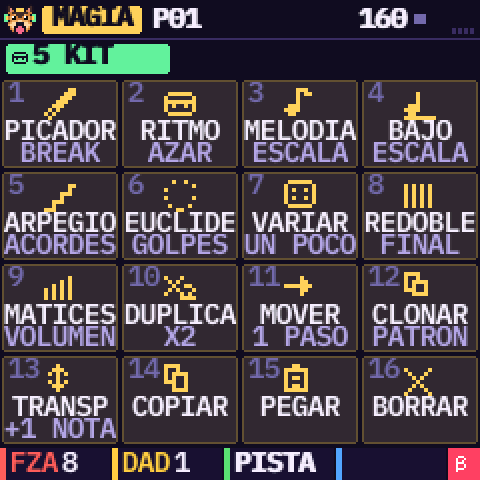
La magiaLFO abre las 16 herramientas mágicas, una por tecla blanca. K1 ajusta su fuerza, K2 el dado, K3 el alcance: la pista sola o el patrón entero.
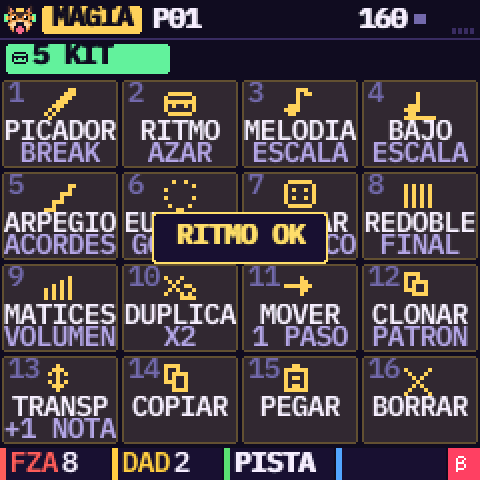
Un ritmo con una teclaTecla 2: RITMO escribe un ritmo en la pista. Vuelve a pulsarla para otro. Cada herramienta se puede deshacer: SAVE mantenido + OCT−.
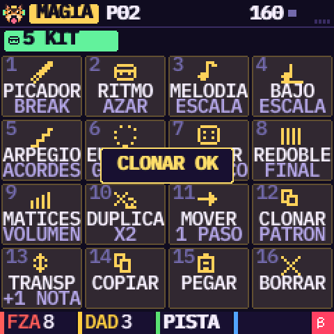
Clona el patrónTecla 12: CLONAR copia el patrón en el siguiente patrón vacío, lo añade a la cadena justo después y te lleva a él. Es la forma más rápida de hacer una variación.
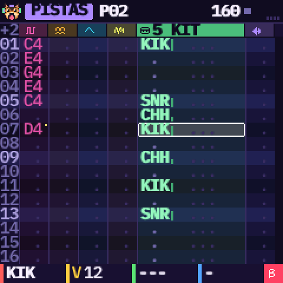
Cambia de patrónAhora estás en P02, que puedes modificar sin tocar P01. PRESETS pasa de un patrón a otro (32 patrones de 1 a 32 filas). Durante la reproducción, si cambias de patrón, la pantalla se queda en el que editas e indica «>P01» para el que suena.
08Tuto 4 · Encadenar los patrones para hacer una canción
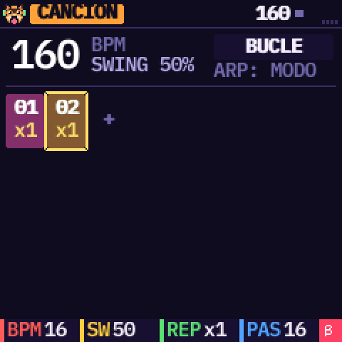
La cadenaGLO abre la página CANCION: la cadena, es decir, la lista de patrones en el orden de la canción. Cada casilla muestra un patrón y cuántas veces suena. SELECT elige una casilla, PRESETS cambia su patrón.
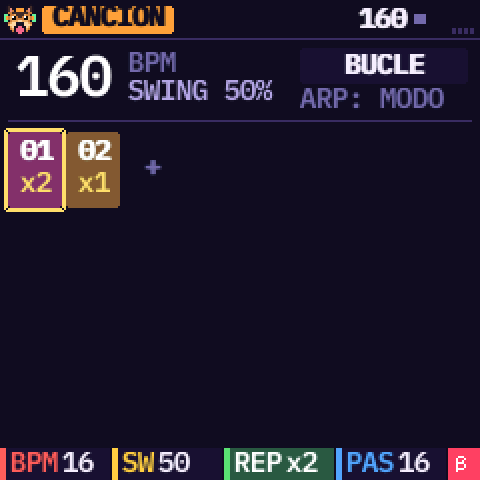
Repite un patrónK3 ajusta cuántas veces la casilla toca su patrón: de ×1 a ×16. ¿Una estrofa de cuatro compases hecha con dos patrones? Pon cada uno a ×2.
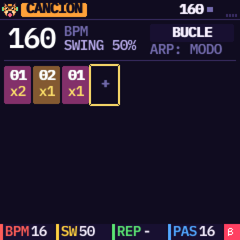
Añade casillasVe al «+» del final y pulsa una tecla blanca: la tecla 1 añade el patrón 1, la tecla 2 el patrón 2… OCT+ copia la casilla del cursor justo detrás de ella, OCT− la quita.
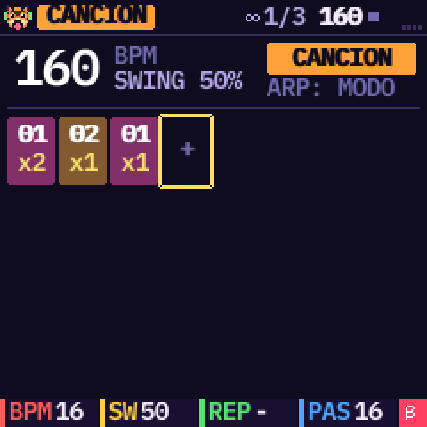
Bucle o canciónARP pasa de BUCLE (el patrón en pantalla suena en bucle, práctico para componer) a CANCION (la canción entera, casilla tras casilla). K1 ajusta el tempo, K2 el swing y K4 la longitud del patrón.
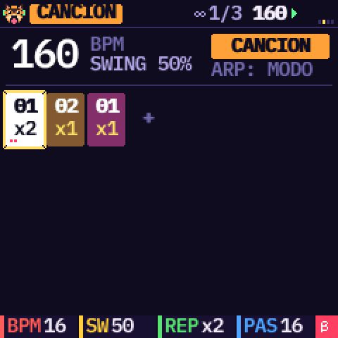
Escucha la canciónEn la casilla de partida, pulsa PLAY. La casilla que suena se ilumina, y unos puntos cuentan sus repeticiones. Al final de la cadena, la canción vuelve a empezar.
09Tuto 5 · Guardar
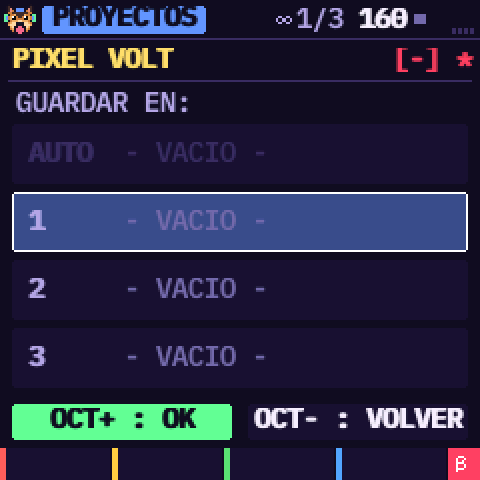
Guardar comoSAVE, luego GUARDAR o GUARDAR COMO… y OCT+. Elige una de las tres ranuras con SELECT (o con una tecla blanca, de la 2 a la 4). Si la ranura ya está ocupada, KAWA pregunta antes de sobrescribirla.
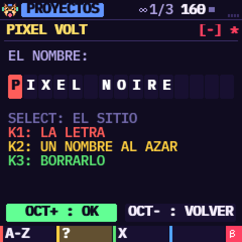
Ponle un nombreSELECT elige la letra que quieres cambiar, K1 la cambia, K2 saca un nombre al azar, K3 lo borra todo. OCT+ guarda.
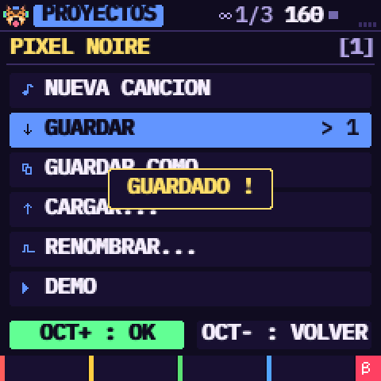
Después, con dos pulsacionesLa canción conserva su ranura: SAVE y luego OCT+ la vuelve a guardar en el mismo sitio. CARGAR… abre una canción, RENOMBRAR… cambia su nombre. Además, KAWA guarda solo en la ranura AUTO cuando no estás tocando.
Deshacer y rehacer
Mantén SAVE: OCT− deshace el último cambio de un patrón, OCT+ lo rehace. Si sueltas SAVE después de mantenerlo, sin pulsar nada más, se deshace una vez. KAWA recuerda los seis últimos pasos.
10El sonido
Los seis motores
| Motor | El sonido | Sus ajustes |
|---|---|---|
| PULSO | Pulso al estilo NES, sin aliasing: 12, 25, 50, 75 % o PWM | forma, barrido de altura, vibrato, tono, triturado, desafinación (supersaw), velocidad del arpegio, glissando |
| ONDA | Tabla de ondas de 4 bits al estilo Game Boy: triángulo, sierra, seno, suave, GB, órgano, voz, FM | los mismos que PULSO |
| RUIDO | Ruido LFSR al estilo NES, LARGO o METAL, afinado por la nota | los mismos que PULSO |
| FM | FM de 6 operadores y 32 algoritmos, el motor de Dexed (una sola pista a la vez) | sonido FM, algoritmo, ratio, retorno, brillo, envolvente de los moduladores, desafinación, vibrato; y cada operador |
| KIT | 16 percusiones sintetizadas por kit, 8 kits: ACUSTICO, HIP HOP, TECHNO, DUB REGGAE, LO-FI, GAME BOY, SNES, PERCUSION | kit, afinación, caída, saturación, triturado, tono |
| SAMPLE | Un break en 16 cortes, o uno de tus sonidos, en cortes o tocado en las notas | fuente, modo, afinación, ajuste al tempo, duración, saturación, triturado, tono |
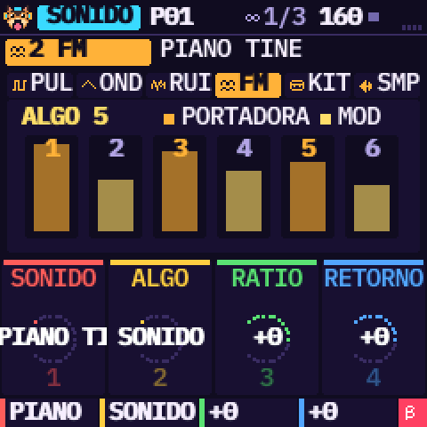
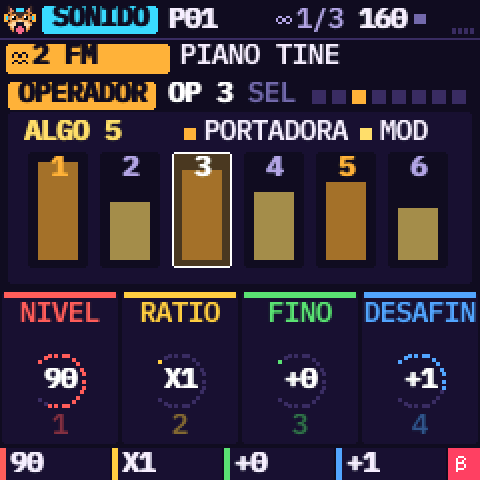
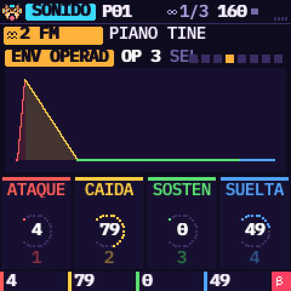
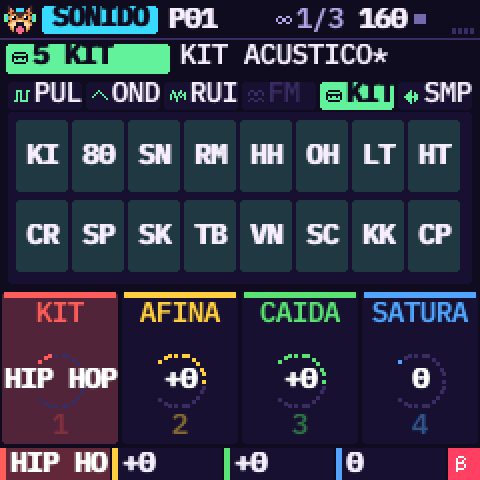
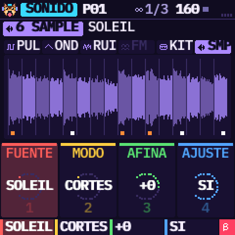
Las páginas de un sonido
EDIT pasa de una página a otra: SONIDO y SONIDO 2 (los ajustes del motor), para la FM OPERADOR y ENV OPERAD, para un SAMPLE EDITAR SAMPLE (más abajo), y después EFECTO, LFO, MODULACION y la TABLA de la pista (su sección). Los cuadraditos de arriba a la derecha muestran dónde estás.
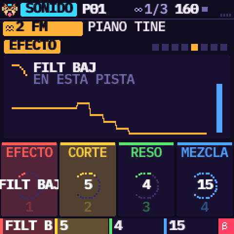
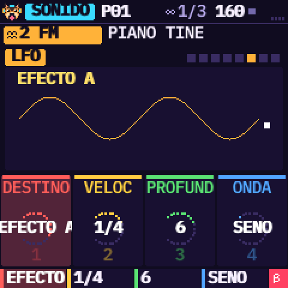
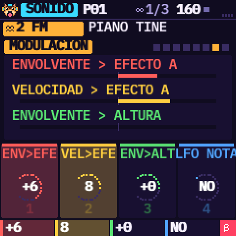
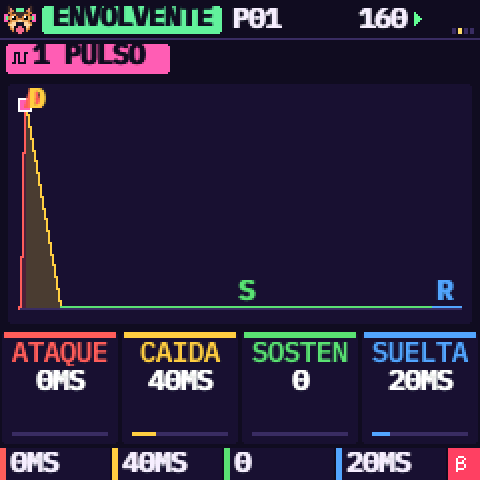
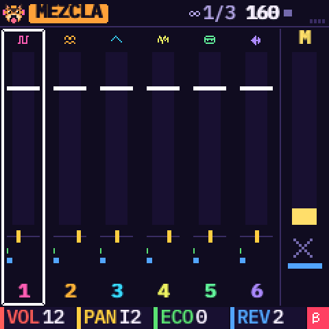
¿Un efecto en el sinte o en el máster? En la página EFECTO de un sonido, el efecto solo afecta a esa pista. Para toda la canción, ve a MEZCLA (ENV dos veces) y gira ALGORITHM más allá de la pista 6: la columna M es el máster, y sus cuatro potenciómetros ajustan su efecto.
11Los efectos en directo
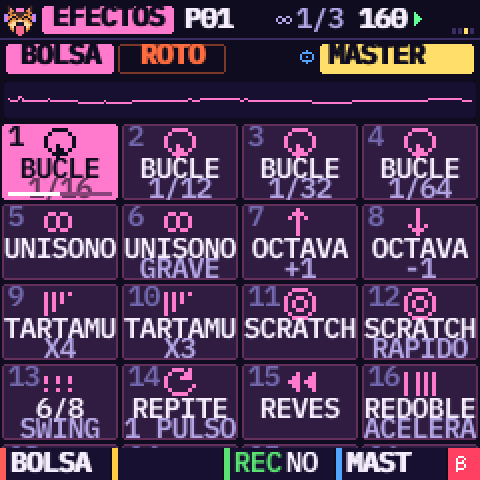
Mantén FX, toca las teclasMantén FX y pulsa teclas blancas: bucles, tartamudeos, scratch, reverso… Suéltalas, y el sonido vuelve. Una pulsación corta en FX deja la página abierta. La onda de arriba muestra el sonido, y la casilla de un efecto activo tiene una barra que sigue su ciclo. En las demás páginas, una franja arriba dice qué efecto suena.
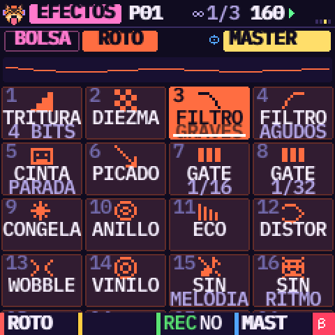
Dos bancos, un destinoOCT+ pasa al banco ROTO: filtros, congelado, distorsión, vinilo… K4 elige el destino: el MASTER, o una sola pista (por ejemplo, poner en bucle solo el break). Las teclas negras silencian pistas. Con REC y la reproducción en marcha, los efectos que tocas se graban en la fina franja LIVE a la derecha del tracker.
12La magia
| Tecla | Herramienta | Qué hace |
|---|---|---|
| 1 | PICADOR | Vuelve a trocear un break, con un bombo en los tiempos fuertes y una caja en el 2 y el 4 |
| 2 | RITMO | Un ritmo: simple, roto o gabber según la fuerza |
| 3, 4 | MELODIA, BAJO | Una melodía o un bajo en la escala |
| 5 | ARPEGIO | Pone en las notas arpegios que siguen la escala |
| 6 | EUCLIDE | N golpes repartidos lo mejor posible por el patrón |
| 7, 8 | VARIAR, REDOBLE | Cambia un poco el patrón; añade redobles al final de los tiempos |
| 9, 10, 11 | MATICES, DUPLICA, MOVER | Acentos; duplica la longitud; desplaza una fila |
| 12 | CLONAR | Copia el patrón en un patrón libre y lo añade a la cadena |
| 13 a 16 | TRANSP, COPIAR, PEGAR, BORRAR | Sube una nota; copiar y pegar una pista o un patrón; borrar |
13Los efectos de celda
Cada celda tiene dos efectos, y los dos suenan. El primero se elige con K3 y se ajusta con K4; un icono dorado lo muestra en el tracker. Mantén ARP y los mismos dos potenciómetros ajustan el segundo: mientras ARP está pulsado, el tracker muestra la segunda columna en verde, con el icono de la primera al lado. Una nota retrasada conserva su altura, un vibrato tiene su propio paneo, un redoble puede triturarse.
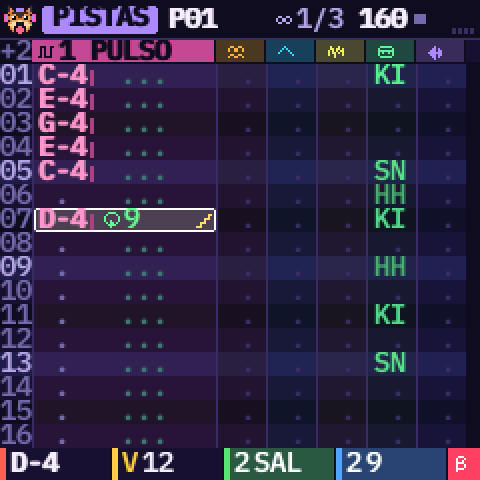
La segunda columnaAquí, con ARP pulsado: el segundo efecto de la celda bajo el cursor es un SAL (salto) a la fila 9, en verde; el icono dorado de después es su primer efecto. Suelta ARP y el tracker vuelve a mostrar la primera columna. Una pulsación breve de ARP solo sigue borrando la celda.
| Efecto | Qué hace |
|---|---|
| ARP | Arpegio de un acorde (14 acordes), a velocidad chiptune |
| GLI | Se desliza desde la nota anterior |
| VIB | Vibrato |
| RED | Redoble: la nota se repite de 2 a 32 veces en la fila (una celda vacía repite la última nota) |
| BND | Curva la altura durante la nota |
| AZR | Azar: la nota suena una vez de cada N |
| RET | Retrasa la nota dentro de la fila |
| CRT | Corta la nota dentro de la fila |
| REV | Toca al revés el corte de un break |
| ALT | Altura: ±12 semitonos para esta nota |
| FOR | Cambia la forma de onda para esta nota |
| TRI | Tritura los bits de esta nota |
| VOL | Deslizamiento de volumen en la fila; en una celda vacía, la nota que suena |
| PAN | Paneo para esta nota |
| INI | Empieza más adelante en el sample o en el corte (en dieciseisavos) |
| SAL | Salto: después de esta fila, el patrón sigue en la fila N (un bucle dentro del patrón, un patrón más corto, un salto a un break; en cualquier pista) |
| FIN | El patrón termina después de esta fila: la canción pasa al siguiente |
14Las tablas
Una tabla es una pequeña secuencia que suena dentro de cada nota de una pista, como en el M8. Sus 16 pasos llegan uno tras otro, cada VELOCIDAD ticks (6 ticks hacen una fila). Cada paso puede mover la altura sobre la nota, ajustar el volumen y tocar un efecto. Escribes una sola nota en el tracker, y la tabla toca un arpegio chiptune, un redoble de batería que crece, un bombo cuya altura cae, un corte que tartamudea.
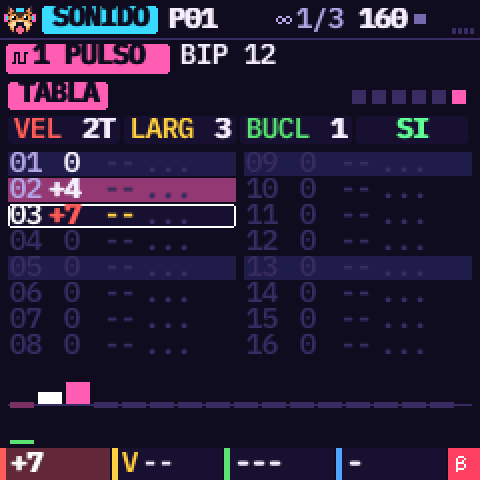
EDIT hasta TABLALa tabla es la última página de un sonido. La fila 0 lleva sus ajustes: K1 la velocidad (en ticks, 6 = una fila), K2 el largo, K3 el paso al que vuelve después del último (o ninguno: el último paso se queda), K4 encendida o apagada. SELECT baja por los pasos. En un paso: K1 la altura sobre la nota (±24 semitonos; en un KIT, la afinación del tambor), K2 el volumen (
--lo deja como está), K3 el efecto, K4 su valor. ARP borra el paso. El paso que suena se ilumina con el color de la pista, y las barras de abajo dibujan la altura de cada paso.
| Efecto | Lo que hace cuando llega su paso |
|---|---|
| GOL | Golpe: vuelve a tocar la nota (el tambor, el corte, el sintetizador), a la altura de su paso |
| CRT | Para la nota |
| VIB, BND | Vibrato, curva de altura desde aquí (0: nada más) |
| FOR, TRI | La forma de onda; los bits triturados |
| VOL, PAN | El volumen se desliza desde aquí (0: se para); el paneo de la nota |
| SAL | Salta al paso N después de este |
La tabla vuelve a empezar con cada nota y sigue mientras la nota suena; se para con la canción. Un golpe solo suena mientras la nota está pulsada: un OFF en el tracker lo termina. Tres tablas para probar:
- Un arpegio chiptune: velocidad 2, largo 3, bucle al paso 1; pasos 0, +4, +7 (o +3 en menor).
- Un redoble que crece: en un KIT, velocidad 3, largo 4: cuatro golpes, volúmenes 6, 9, 12, 15, bucle al paso 4.
- Un bombo que cae: en una ONDA o un PULSO, velocidad 1, pasos 0, −2, −4, −6, −8… y sin bucle.
15El groove
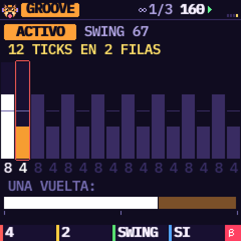
GLO dos vecesEl groove ajusta cuánto dura cada fila, en ticks: 6 ticks son una semicorchea recta. Sus pasos suenan por turnos, uno por fila: 7 y luego 5 es un swing ligero, 8 y luego 4 un swing marcado, 4 4 4 un ternario. Cuando está activo, sustituye el swing de la página CANCION. K1 ajusta los ticks del paso elegido (SELECT o una tecla blanca lo elige), K2 el largo, K3 un modelo (activa el groove), K4 encendido o apagado.
La franja bajo las barras muestra una vuelta tal como suena. Cuando los ticks suman 6 por fila (7 + 5), el compás conserva su duración; si no, la cuenta se pone en rojo, y el patrón se acorta o se alarga. El reloj MIDI de salida envía los ticks tal como suenan: una caja de ritmos sigue el groove.
16Tus propios samples
KAWA tiene cuatro ranuras para tus sonidos: MI 1 a MI 4, de unos 1,7 s cada una a 22 kHz. Aparecen como FUENTE del motor SAMPLE, junto a los breaks.
- En el emulador: suelta un archivo de sonido sobre la página, o elígelo en el panel «Tus samples». Se convierte solo: mono, 22 kHz, normalizado.
- En el FM-1:
python3 install/kawa_samples.py put 1 mi-sonido.wav, o el botón «Enviar a mi FM-1» del emulador. KAWA tiene que estar parado durante el envío: el sonido se corta un instante mientras se escribe. Si el envío se interrumpe, la ranura se queda vacía, nunca dañada. - Después, en la página SONIDO de una pista SAMPLE, pon FUENTE en MI 1 a 4 y elige el MODO: en cortes en las teclas blancas, o tocado en las notas (C4 = la altura original).
Editar un sample
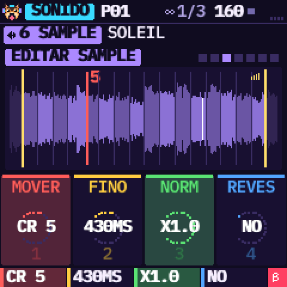
EDIT hasta EDITAR SAMPLEEn una pista SAMPLE, un break o uno de tus sonidos. No se reescribe nada en el sonido: la edición solo dice cómo suena, y se guarda con el proyecto, pista por pista. SELECT elige la marca: INICIO, FIN, y luego los cortes 2 a 16 (en modo CORTES). K1 la mueve, K2 con precisión (su sitio se muestra en milisegundos), y oyes el corte. Mueve un corte y los demás se quedan donde estaban; ARP los vuelve a repartir por igual. K3 NORM lleva el punto más fuerte de la parte editada al máximo (hasta ×16), K4 la toca al revés.
17Atajos
| Gesto | Efecto |
|---|---|
| HOME mantenido | La ayuda de la página |
| SAVE mantenido + OCT− / OCT+ | Deshacer / rehacer |
| SAVE y luego OCT+ | Volver a guardar la canción en su sitio |
| REC mantenido + SELECT | El salto de filas después de una nota |
| ARP mantenido + K3 K4 (PISTAS) | El segundo efecto de la celda |
| ARP mantenido + SELECT | Insertar / quitar una fila de la pista |
| ARP mantenido + ALGORITHM | Insertar / quitar una fila de todo el patrón |
| ARP mantenido + tecla negra (MEZCLA) | Solo de la pista |
| FX mantenido + teclas blancas | Efectos en directo |
| GLO dos veces, tres veces | El GROOVE, luego las OPCIONES |
| ENV dos veces | MEZCLA y el efecto del máster |
En el emulador: Ctrl+Z deshacer, Ctrl+Y rehacer, Ctrl+S guardar, Espacio PLAY, Intro REC, Mayús mantenido FX, las flechas para la fila y la pista.
18Opciones
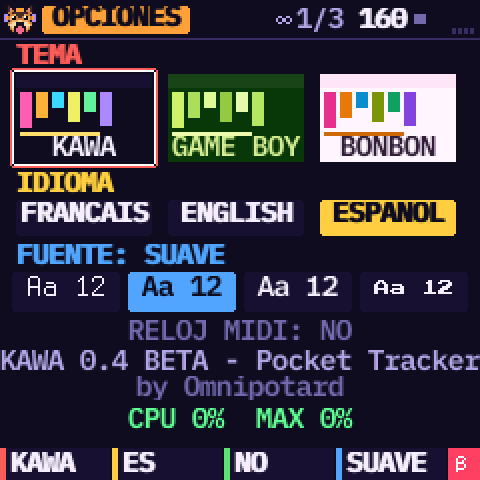
Tema, idioma, reloj, fuenteGLO tres veces. K1 elige el tema (KAWA, GAME BOY, BONBON), K2 el idioma de la pantalla (inglés, francés, español), K4 la fuente de la pantalla: SUAVE (la de serie), BASE (la de los inicios), CLARA (hecha para leer) u 8-BIT (arcade); cada una se muestra escrita con ella misma. K3 ajusta el reloj MIDI por USB:
- SALIDA: KAWA envía start, stop y el tempo (también los ticks del groove), para sincronizar una caja de ritmos o un programa.
- ENTRADA: KAWA sigue a otra máquina. Su START arranca la canción donde lo haría PLAY, su STOP la para, su tempo manda (se muestra en verde, medido sobre cuatro pulsos); cada fila espera sus ticks o los alcanza, y empieza unos milisegundos después de su tick. En ENTRADA sin reloj, PLAY lo espera, y lo dice.
Los ajustes se conservan al apagar.
La línea CPU dice cuánto tiempo de cálculo usa el sonido. Por encima del 70 %, KAWA aligera el sonido por sí solo, empezando por la reverb, en lugar de producir chasquidos.
19Ayuda y solución de problemas
- Ya no sé qué hace un potenciómetro: mira la línea de abajo, o mantén HOME.
- No hay sonido: sube MASTER; en MEZCLA, comprueba que ninguna pista esté silenciada (una M roja); comprueba el volumen de la nota con K2.
- «FM: UNA SOLA PISTA»: otra pista ya tiene la FM; cambia primero su motor.
- Un cambio que ha salido mal: SAVE mantenido + OCT−.
- KAWA ya no arranca: mantén OCT− al encender (el rescate USB) y luego reinstala KAWA o el firmware oficial.
20Apoyar KAWA
KAWA es gratuito y libre. Si te gusta lo que hago, ¡piensa en apoyarme! ¡Cada pequeño gesto significa muchísimo! Invítame a una cerveza y seguiré haciendo sonar el FM-1.
Invítame a una cerveza